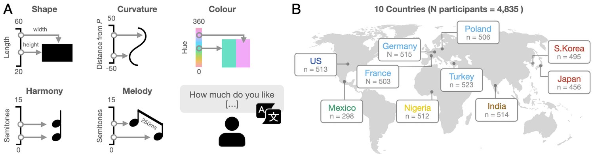
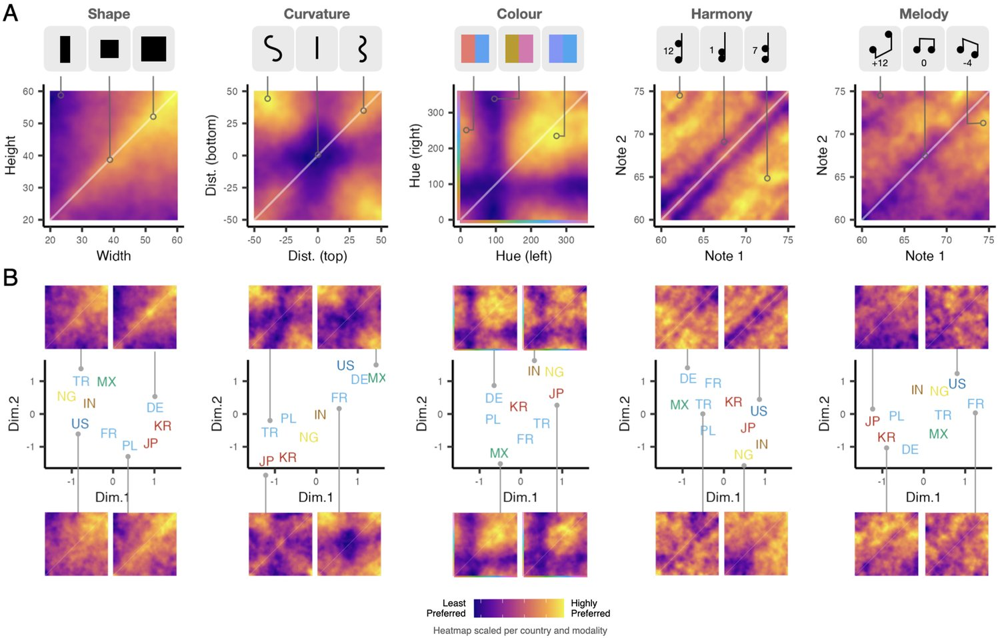
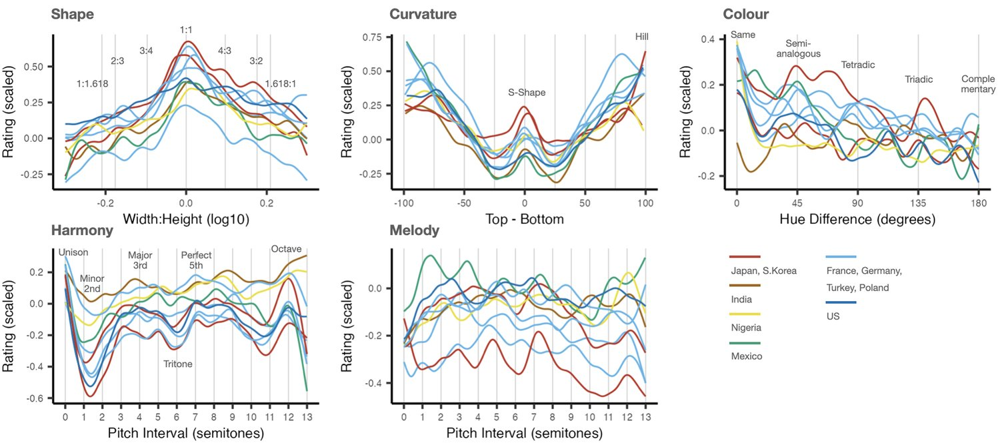
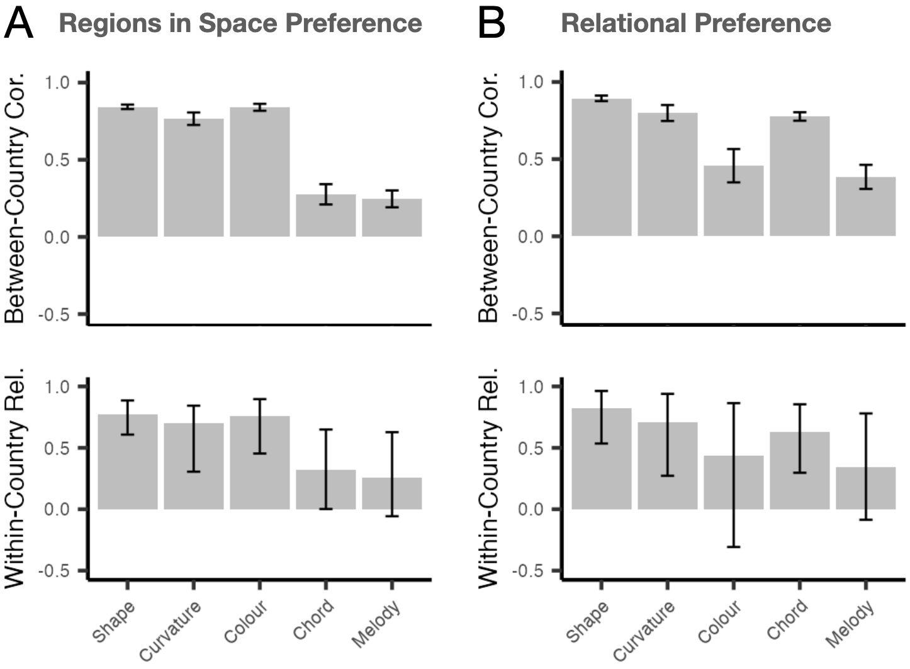

Visual and Auditory Aesthetic Preferences Across Cultures
Research on how humans perceive aesthetics in shapes, colours, and music has predominantly focused on Western populations, limiting our understanding of how cultural environments shape aesthetic preferences. We present a large-scale cross-cultural study examining aesthetic preferences across five distinct modalities extensively explored in the literature: shape, curvature, colour, musical harmony and melody. We gather 401,403 preference judgements from 4,835 participants across 10 countries, systematically sampling two-dimensional parameter spaces for each modality. The findings reveal both universal patterns and cultural variations. Preferences for shape and curvature cross-culturally demonstrate a consistent preference for symmetrical forms. While colour preferences are categorically consistent, ratio-like preferences vary across cultures. Musical harmony shows strong agreement in interval relationships despite differing regions of preference within the broad frequency spectrum, while melody shows the highest cross-cultural variation. These results suggest that aesthetic preferences emerge from an interplay between shared perceptual mechanisms and cultural learning.
Keywords: aesthetics; art and cognition; cross-cultural analysis; vision; music; culture; big data
Our everyday lives are filled with aesthetic experiences. When choosing the outfit to wear, we consider colour combinations. When listening to music, certain sounds evoke pleasure while others create discomfort. These aesthetic judgements, deeply personal, are embedded within broader cultural frameworks that shape our taste and experiences of the world Che et al. ((2018)).
日常生活中处处是审美体验。挑选要穿的衣服时，我们会斟酌颜色搭配；听音乐时，某些声音唤起愉悦，另一些则令人不适。这些审美判断虽极具个人色彩，却嵌在更大的文化框架之中，而正是这些框架塑造着我们的品味与对世界的体验 Che 等（2018）。
The origin of aesthetic preferences has been debated throughout history, from Plato’s philosophical discourse on beauty Pappas ((2024)) to contemporary cognitive scientists Palmer et al. ((2013)). However, it remains open to what extent aesthetic preferences arise from cultural learning (preferences arising from exposure to specific cultural styles, conventions, and norms), or from biologically rooted universal principles (preferences arising from fundamental properties of the nervous system, sensory processing, or basic cognitive mechanisms that are largely consistent across individuals and cultures Che et al., (2018); Sharman, (1997); Bertamini & Rampone, (2020)).
审美偏好的起源历来众说纷纭，从柏拉图关于美的哲学论述 Pappas（2024），到当代认知科学家的研究 Palmer 等（2013），莫不如此。然而，审美偏好究竟在多大程度上来自文化学习（因接触特定文化风格、惯例与规范而形成的偏好），又在多大程度上来自根植于生物学的普遍原则（源自神经系统的基本属性、感觉加工或基础认知机制、且在个体与文化之间大体一致的偏好 Che 等，2018；Sharman，1997；Bertamini 与 Rampone，2020），仍是一个开放问题。
Previous research, predominantly focused on Western populations, has offered limited insight into this question about their cross-cultural generalisability Blasi et al. ((2022)); Che et al. ((2018)). We address this gap through a large-scale (N = 4,835), cross-cultural (10 countries) investigation of aesthetic preferences across five distinct modalities: shape (aspect ratio of rectangle), curvature (Bézier curve; Farin, (1993)), colour (differing in hue degrees), musical harmony and melody (pitch intervals). Notably, we focus on two-dimensional representations of these five distinct modalities so that they can be continuously sampled without relying on discrete categories (e.g., canonical aspect ratios in shape and curvature). This is in contrast with many existing studies that rely on a predefined set of stimuli, enabling to capture controlled parametric variations.
此前的研究主要聚焦西方人群，对偏好的跨文化普适性这一问题提供的见解有限 Blasi 等（2022）；Che 等（2018）。我们通过一项大规模（N = 4,835）、跨文化（10 个国家）的研究来填补这一空缺，考察五种不同模态上的审美偏好：形状（矩形的长宽比）、曲率（Bézier 曲线；Farin，1993）、颜色（色相度数不同）、音乐和声与旋律（音程）。我们特意聚焦这五种模态的二维表征，使其能够被连续采样而不依赖离散类别（例如形状与曲率中那些典范性的长宽比）。这与许多依赖预定刺激集的既有研究形成对照——我们的做法得以捕捉受控的参数变化。
Here, we aim to identify both universal patterns, potentially reflecting innate preferences stemming from fundamental aspects of human perception (e.g., symmetry processing or basic sensory consonance), and culturally specific variations, shaped by exposure to diverse artistic traditions and cultural norms. We hypothesise that certain modalities, such as shape and curvature, may exhibit greater universality due to shared perceptual biases Bertamini & Rampone ((2020)); Little et al. ((2007)), while others, such as melody and color combinations, may demonstrate more cultural variability reflecting the influence of learnt associations and cultural conventions McDermott et al. ((2016)); Anglada-Tort et al. ((2023)).
本文旨在同时识别两类模式：一类是可能反映人类知觉基本面向（如对称性加工或基础的感觉协和性）的先天偏好的普遍模式，另一类则是由接触多样艺术传统与文化规范所塑造的、具有文化特异性的变异。我们假设，形状与曲率等模态可能因共享的知觉偏向而表现出更强的普遍性 Bertamini 与 Rampone（2020）；Little 等（2007），而旋律与颜色组合等模态则可能因习得性联想与文化惯例的影响而表现出更大的文化变异 McDermott 等（2016）；Anglada-Tort 等（2023）。

图 1：实验设计示意图。（A）在各模态的独立实验中，参与者被要求就所见或所闻的刺激，在 7 点量表上评价自己的喜爱程度，1 为「完全不喜欢」，7 为「非常喜欢」，量表已翻译为各自的语言。每次呈现的刺激都通过在总体空间中随机采样两个点现场生成（见方法部分的「定义刺激空间」）。（B）参与者招募自 10 个国家，覆盖所有大洲，按 WorldBank（www.worldbank.org）定义的区域着色。
We deliberately selected modalities that have been extensively explored in empirical aesthetics research for comparisons with our cross-cultural insights. Below, we summarise key findings on these modalities.
我们有意识地选择了在实证美学研究中被广泛考察过的模态，以便与我们跨文化的发现作比较。下面简要回顾这些模态上的关键结论。
Early studies have shown that rectangular shapes following specific ratio rule, such as the golden ratio (approximately 1:1.618), are often perceived as more aesthetically appealing Fechner ((1876)). However, individual differences in aesthetic preferences for rectangles have emerged across studies Green ((1995)); McManus et al. ((2010)); McManus & Wu ((2013)), and these variations challenge the assumed universality of the golden ratio Stieger & Swami ((2015)). Other studies have indicated the brain processes horizontal proportions with greater ease (thus more aesthetically appealing), as this scanning direction aligns naturally with our landscape-oriented vision system McManus & Wu ((2013)).
早期研究表明，遵循特定比例规则（如黄金比例，约为 1:1.618）的矩形常常被认为更具美感 Fechner（1876）。但多项研究也揭示出人们对矩形审美偏好的个体差异 Green（1995）；McManus 等（2010）；McManus 与 Wu（2013），这些变异对黄金比例普适性的假定提出了挑战 Stieger 与 Swami（2015）。另有研究指出，大脑加工水平方向的比例更为轻松（因而更具美感），因为这一扫描方向与我们横向取向的视觉系统天然契合 McManus 与 Wu（2013）。
Curved shapes have consistently been shown to elicit more favourable responses, being perceived as pleasant, calming and beautiful, compared to angular forms Chuquichambi et al. ((2022)). Smooth curvature, characterised by gradual transitions along lines or surfaces, has shown to induce greater aesthetic appeal than abrupt or angular changes. This concept is notably illustrated by William Hogarth’s line of beauty Hogarth ((1753)), an S-shaped curve that embodies ideal curvature. Hogarth posited that moderate curvature strikes the optimal aesthetic balance, avoiding both excessive flatness and extreme undulation.
相较棱角分明的形态，曲线形状一贯能引发更有利的反应，被视为悦目、平静且优美 Chuquichambi 等（2022）。平滑曲率——其特征是沿线条或表面渐变过渡——被证明比突兀或带棱角的变化更具美感。威廉·荷加斯（William Hogarth）的「美的线条」Hogarth（1753）便是这一概念的著名例证：一条 S 形曲线， 集中体现了理想的曲率。荷加斯主张，适中的曲率达成了最优的审美平衡，既避免过度平直，也避免极端起伏。
Preferences for colour combinations are understood to emerge from a complex interplay of ecological associations, harmony principles, and cultural or personal contexts (for meta-review, see Palmer et al., (2013)). Contrasting colours can create compelling visual effects, particularly when warm figures (e.g., red or yellow) appear against cool backgrounds (e.g., blue or green), enhancing perceived saturation Schloss & Palmer ((2011)). Notable cross-cultural differences have been observed in colour preferences Taylor et al. ((2013)), which may stem from the distinct meaning associations that colours carry within different cultural contexts (e.g., certain colours being associated with higher status and power).
颜色组合的偏好被认为源自生态联想、和谐原则，以及文化或个人语境的复杂交互（综述见 Palmer 等，2013）。对比色能制造引人注目的视觉效果，尤其当暖色主体（如红或黄）出现在冷色背景（如蓝或绿）之上时，会增强被感知的饱和度 Schloss 与 Palmer（2011）。颜色偏好上已观察到显著的跨文化差异 Taylor 等（2013），其来源可能是颜色在不同文化语境中承载的不同意义联想（例如某些颜色与更高的地位和权力相关联）。
Exposure to specific musical systems is thought to shape our mental representations of musical harmony. Recent cross-cultural studies involving small-scale societies suggest that perceptions of pleasantness and harmony are culturally influenced rather than universal McDermott et al. ((2016)); McPherson et al. ((2020)). Moreover, a large-scale approach systematically exploring preferences for musical harmonies have revealed distinct patterns in interval preferences that are shaped by timbre Marjieh et al. ((2024)).
接触特定的音乐体系被认为会塑造我们关于音乐和声的心理表征。近期针对小规模社会的跨文化研究提示，愉悦感与协和性的知觉受文化影响，而非普遍一致 McDermott 等（2016）；McPherson 等（2020）。此外，一项系统考察和声偏好的大规模研究揭示了受音色塑造的音程偏好上的独特模式 Marjieh 等（2024）。
Compared to musical harmony, preferences for musical melody are relatively less understood. Experimental work explored the related areas of memory and expectations Narmour ((1992)); Dowling ((1986)), while corpus work identified patterns that are common in Western music Vos & Troost ((1989)); Rodriguez Zivic et al. ((2013)). Computational modelling approaches have utilised corpus data to understand probabilistic sequences of musical notes to predict surprise and pleasure Temperley ((2008)). A recent study using iterated paradigms show that sung melodies, passed along participant chains, evolve into prototypical sequences, revealing shared internal representations and preferences Anglada-Tort et al. ((2023)).
与音乐和声相比，人们对音乐旋律的偏好相对研究不足。实验工作探索了记忆与期待等相关领域 Narmour（1992）；Dowling（1986），语料库工作则识别了西方音乐中常见的模式 Vos 与 Troost（1989）；Rodriguez Zivic 等（2013）。计算建模方法利用语料库数据理解音符的概率序列，以预测惊讶与愉悦 Temperley（2008）。近期一项采用迭代范式的研究表明，在参与者链条上传递的歌唱旋律会演化为原型序列，揭示出共享的内部表征与偏好 Anglada-Tort 等（2023）。
We recruited 4,835 participants (mean age across countries = 42.7, SD = 12.6) through the online CINT platform (www.cint.com), using an approved ethical protocol (Max Planck Ethics Council #202142). The selection of countries ensured broad geographical and linguistic coverage across all continents. To be eligible for participation, individuals were required to have been born in their respective country and be current residents (Figure 1B). Participants received compensation at their country’s standard wage rate. Sample sizes and specific locations were determined based on a pilot experiment conducted in English and the participant pool availability as reported by CINT.
我们通过在线平台 CINT（www.cint.com）招募了 4,835 名参与者（各国平均年龄 = 42.7，SD = 12.6），所用伦理方案已获批准（Max Planck 伦理委员会 #202142）。国家的选取保证了跨越所有大洲的广泛地理与语言覆盖。参与资格要求个体在其所在国家出生且目前居住于该国（图 1B）。参与者按所在国家的标准工资水平获得报酬。样本量与具体地点依据一项以英语开展的预实验，以及 CINT 报告的参与者库可用情况确定。
We systematically sampled parameters by defining a fixed two-parameter space for each modality. In each trial, two values were randomly selected from the given space to define the stimulus on the spot (Figure 1A). This way, we could uniformly sample across the entire space without discrete categories and thus pinpoint high and low preference density regions of the full continuous space. In particular, this is advantageous in a cross-cultural context, as it allows us to avoid making assumptions about specific discrete categories that are primarily derived from existing research focused on Western participants Blasi et al. ((2022)).
我们通过为每个模态定义一个固定的双参数空间来系统采样参数。每次试次中，从给定空间随机选取两个值，现场生成刺激（图 1A）。这样一来，我们能在整个空间上均匀采样而不依赖离散类别，从而精确定位完整连续空间中偏好密度的高值区与低值区。在跨文化语境下这一点尤为有利，因为它让我们得以避免对那些主要源自聚焦西方参与者的既有研究的离散类别做出假定 Blasi 等（2022）。
Rectangles were generated with varying width and height, ranging from 20 to 60 pixels, to be presented in a 100100 pixel window. The range selection represents a careful balance between detecting subtle differences in aspect ratios whilst maintaining a reasonable maximum ratio. We selected values that constrained the maximal aspect ratio between 1:1 and 1:3 (or 3:1).
矩形以变化的宽与高生成，取值范围为 20 至 60 像素，呈现在 100100 像素的窗口中。该范围的选取在「能察觉长宽比的细微差异」与「维持合理的最大比例」之间做了审慎权衡，我们限定了最大长宽比介于 1:1 与 1:3（或 3:1）之间。
Smooth curved lines were created using the cubic Bézier curve formula Farin ((1993)):
平滑曲线由三次 Bézier 曲线公式生成 Farin（1993）：
where the curve always starts and ends at the vertical centerline (=50), and ranges from 0 to 1. is the start point, is the first control point, is the second control point, and is the endpoint (i.e., 100px in length). The parameters and ranged from -50 to 50, controlling the curvature of the line.
其中曲线始终起止于垂直中心线（=50）， 的取值范围为 0 到 1。 为起点， 为第一个控制点， 为第二个控制点， 为终点（即长度为 100px）。参数 与 的取值范围为 -50 到 50，控制线条的弯曲程度。
Pairs of colours were generated using the OKLCH colour space Ottosson ((2020)). Whilst there are other colour spaces such as RGB and HSV, we selected OKLCH as it more accurately represents human perception of colour similarities. We set the lightness to 70% and chroma to 0.15, presenting two colours (25px width, 50px height) side by side with each varying hue angles from 0° to 360°. These parameters were carefully chosen to align with previous research on colour representation Schloss & Palmer ((2011)); Van Geert & Jacoby ((2024)).
成对颜色使用 OKLCH 颜色空间生成 Ottosson（2020）。虽存在 RGB、HSV 等其他颜色空间，我们选择 OKLCH 是因为它能更准确地表征人类对颜色相似性的知觉。我们把明度设为 70%、彩度设为 0.15，并排呈现两种颜色（宽 25px、高 50px），各自色相角在 0° 到 360° 之间变化。这些参数是参照颜色表征方面的既有研究精心选定的 Schloss 与 Palmer（2011）；Van Geert 与 Jacoby（2024）。
Pairs of harmonic complex tones (dyads) were played simultaneously for harmony (1s in duration), while sequentially presented for melodies (750ms in duration) by including a 250ms gap, spanning a continuous MIDI range from 60 to 75 (C4 to C5). These tones were synthesised during the experiment using ToneJS (tonejs.github.io), following the same parameter settings as Marjieh et al., (2024) (10 harmonics, amplitude roll-off=12dB).
成对的谐波复音（双音）在和声条件下同时播放（时长 1s），在旋律条件下则依次呈现（时长 750ms，含 250ms 间隔），覆盖从 60 到 75（C4 到 C5）的连续 MIDI 音域。这些音在实验中用 ToneJS（tonejs.github.io）合成，参数设定沿用 Marjieh 等（2024）（10 次谐波，振幅滚降 = 12dB）。
Stimuli were presented using Harrison et al. ((2020)), a web-based experimental platform (www.psynet.dev). Each participant completed 80 trials. In each trial, participants viewed or heard a stimulus and rated “How pleasant is this [modality type] from a scale of 1 (not at all) to 7 (very much)?” Responses were collected using a 7-point Likert scale (Figure 1A). To prevent rapid clicking, participants could only proceed after a 1.5-second delay. Each trial lasted approximately 4 seconds, with the complete experiment taking 8 minutes.
刺激通过 Harrison 等（2020）——一个基于网络的实验平台（www.psynet.dev）——呈现。每位参与者完成 80 次试次。每次试次中，参与者观看或聆听一个刺激，并回答「从 1（完全不）到 7（非常）的量表上看，这个［模态类型］有多令人愉悦？」回答用 7 点李克特量表收集（图 1A）。为避免快速点击，参与者需等待 1.5 秒后才能继续。每次试次约持续 4 秒，整个实验耗时 8 分钟。
For colour perception, we accounted for display variations by applying gamma correction to standardised value 1/2.2, proven effective in previous online studies Epicoco et al. ((2024)). Participants were instructed to disable night-shift mode and required to pass a colour blindness test consisting of six Ishihara plates Clark ((1924)). Participants also verified screen brightness by adjusting until three grey rectangles were visible against a darker grey background.
在颜色知觉方面，我们通过施加伽马校正到标准化值 1/2.2 来应对显示器差异，该做法已在先前的在线研究中被证明有效 Epicoco 等（2024）。参与者被要求关闭夜间模式，并通过一项含六张石原氏色盲检测图的测试 Clark（1924）。参与者还需校准屏幕亮度，直至能在较暗的灰色背景上看见三个灰色矩形。
For harmony and melody perception, participants were asked to adjust the volume to a comfortable level and were instructed to use headphones. An audio screening test required them to identify the odd sound amongst three options.
在和声与旋律知觉方面，参与者被要求把音量调至舒适水平并使用耳机。一项听觉筛查测试要求他们从三个选项中找出那个与众不同的声音。

图 2：模态空间中的偏好区域。（A）用固定带宽对偏好评分做平滑处理后，各模态空间中最受偏好的区域以黄色高亮。白色对角线标示上下数值相等但两个参数顺序相反的位置。（B）偏好区域上的跨文化相似性及其变异。用 Jensen-Shannon 距离衡量国家层面矩阵之间的相似性，并用 UMAP 做降维。位置相近的国家具有相似的偏好区域。插图展示了这些 UMAP 不同坐标处的样例，以说明其中的变异。

图 3：各模态上的关系性偏好按下述方式评估：形状 = 宽高长宽比；曲率 = 控制点 与 之差；颜色 = 成对色相之间的绝对度数差；和声与旋律 = 成对音之间的音程（以半音计）。每条线代表一个国家的 GAM 拟合曲线，颜色标示所属世界区域。

图 4：文化之间的一致与分歧。国家之间在（A）模态空间中的偏好区域与（B）跨模态关系性偏好上的相关性。二者下方，我们用分半相关报告了信度。误差棒表示 95% CI。
We begin by exploring the regions in each modality space that participants found aesthetically pleasing (or displeasing). Figure 2A displays these spaces and preferred regions in yellow, aggregated across all countries. We generated these heatmaps by smoothing the preference ratings across the continuous parameter spaces with a fixed grid. Values above or below the white diagonal lines indicate the two parameters being symmetrical.
我们先考察各模态空间中参与者觉得美（或不美）的区域。图 2A 展示了这些空间，偏好区域以黄色标示，为所有国家的汇总结果。我们通过在连续参数空间上以固定网格平滑偏好评分来生成这些热力图。白色对角线上下两侧的数值表示两个参数呈对称关系。
We observe that preferences in certain modalities depend strongly on the ratios between parameter values. This is evident in the strong preference following the diagonal in shape space, where perfectly squared shapes lie, and in the striped patterns in musical harmony, which reflect structured interval preferences. By contrast, other modalities show more categorical or absolute preferences. For example, colour combinations demonstrate that bluish hues are consistently preferred while dark sandy colours are disliked, regardless of their pairings. For curvature lines, the strongest preference is seen at regions that form S-shaped patterns where and distances mirror each other symmetrically, but also when both control points shift equally in the same direction, creating a bumpy-hill shape. Notably, melody preferences displays the least structured pattern, suggesting greater cross-cultural or individual variability.
我们观察到，某些模态上的偏好强烈依赖参数值之间的比值。这在形状空间中沿对角线（即完美正方形所在处）的强烈偏好，以及音乐和声中反映结构化音程偏好的条纹模式上表现得尤为明显。相比之下，另一些模态表现出更偏向类别化或绝对化的偏好。例如，颜色组合显示出偏蓝色调一贯受偏好、深沙色则不受喜爱，且与搭配对象无关。对于曲线，最强的偏好出现在 与 距离对称镜像、构成 S 形图案的区域，也出现在两个控制点朝同一方向等量偏移、形成起伏山丘形状的情形。值得注意的是，旋律偏好的结构化程度最低，提示存在更大的跨文化或个体变异。
To assess cross-cultural similarities in these preference spaces, we analysed each country separately and measured the similarity between them using the Jensen-Shannon distance, which is suitable for comparing probability distributions. Figure 2B shows these relationships after applying UMAP for dimension reduction, with various coordinates of the relation space shown as small insets.
为评估这些偏好空间中的跨文化相似性，我们逐国分析，并用 Jensen-Shannon 距离——一种适合比较概率分布的度量——衡量它们之间的相似性。图 2B 展示了经 UMAP 降维后的这些关系，关系空间的若干坐标以小插图呈现。
The observed pattern reveals clear cross-cultural differences. For instance, Japanese participants uniquely prefer straight lines, a pattern not observed elsewhere—in contrast, straight lines were the least preferred in France. The striped pattern in musical harmony, seen at the global level (Figure 2A), is particularly prominent among German and US participants (with Germans favouring harmonies in the lower frequency spectrum), whilst it is less visible in countries such as Turkey and Nigeria.
观察到的模式揭示出清晰的跨文化差异。例如，日本参与者独特地偏好直线，这一模式在其他地方均未出现——相反，直线在法国是最不受偏好的。在全球层面（图 2A）看到的音乐和声条纹模式，在德国与美国参与者中格外突出（德国人偏爱频谱较低区的和声），而在土耳其、尼日利亚等国则不太明显。
Interestingly, geographical proximity does not necessarily indicate a similar preference. While Korea and Japan always close to each other in these preference spaces, European countries and the US show no clear grouping, suggesting that additional cultural or historical factors may be at play.
有意思的是，地理上的邻近并不必然意味着偏好相似。虽然韩国与日本在这些偏好空间中始终彼此靠近，欧洲各国与美国却未呈现清晰的聚类，提示可能还有其他文化或历史因素在起作用。
The question of whether aesthetic appeals are governed by specific mathematical principles (i.e., ratio rules) has been extensively debated (see meta-review by Palmer et al., (2013)). Building on previous research exploring these structural relationships, as shown in Figure 3, we analysed relational (ratio-like) preferences across five modalities, including the aspect ratios of rectangular shapes, the differences between two control points of cubic Bézier curves, the differences in hue degrees between colour pairs, and pitch intervals for both harmony and melody (translated from frequency to continuous MIDI semitones). We fitted a Generalised Additive Model (GAM) with a fixed smoothing parameter ( knots = 15) to capture the non-linear relationships in marginal distributions.
审美吸引力是否由特定的数学原则（即比例规则）所支配，这一问题一直备受争论（综述见 Palmer 等，2013）。在既有探索这类结构关系的研究基础上，如图 3 所示，我们分析了五种模态上的关系性（类比值）偏好，包括矩形形状的长宽比、三次 Bézier 曲线两个控制点之差、成对颜色之间的色相度数差，以及和声与旋律的音程（由频率换算为连续的 MIDI 半音）。我们拟合了一个带固定平滑参数（ 节点数 = 15）的广义加性模型（GAM），以捕捉边缘分布中的非线性关系。
For rectangular shapes, we see a prominent peak at the 1:1 ratio, representing perfect squares, as was seen with concentrated preference along the diagonal in Figure 2. The preference strength gradually declines as the ratio deviates from this symmetrical form. Notably, we find no evidence of preference peaks at the famously known golden ratio (1.618:1 or its inverse) in any of the countries, aligning with recent observations Stieger & Swami ((2015)). Interestingly, the data from South Korea shows distinct peaks around the 4:3 and 3:2 aspect ratios, which align with common proportions used in visual media and frame design, suggesting how these familiar aspect ratios could have appeared appealing Cossar ((2009)).
对于矩形，我们看到在 1:1（即完美正方形）处有一个突出的峰值，这与图 2 中沿对角线的集中偏好相一致。随着比例偏离这一对称形态，偏好强度逐渐下降。值得注意的是，我们在任何一个国家都没有发现著名的黄金比例（1.618:1 或其倒数）处存在偏好峰，这与近期的观察相符 Stieger 与 Swami（2015）。有意思的是，韩国的数据在 4:3 与 3:2 长宽比附近呈现出明显的峰值，这两个比例正对应视觉媒介与画面设计中的常用比例，提示这些熟悉的长宽比可能因此显得悦目 Cossar（2009）。
A particularly intriguing finding present across all cultures is a consistent bias in participants favouring wider (z-score mean = 0.27) rectangles over taller ( = 0.17) ones with equivalent aspect ratios ( = 76.5, .001; seen as slight asymmetry with higher ratings above the 1:1 in Figure 3). This finding aligns with previous works demonstrating this bias, as objects placed wider can indicate stability and thus appear more appealing Goffaux ((2010)).
在所有文化中都出现的一个格外引人注目的发现是：在长宽比相同的条件下，参与者一贯偏向更宽的矩形（z 分数均值 = 0.27），而非更高的矩形（ = 0.17）（ = 76.5， .001；在图 3 中表现为 1:1 之上评分略高的不对称）。这一发现与此前证明该偏向的工作相符：物体摆得更宽可指示稳定性，因而显得更具吸引力 Goffaux（2010）。
For curved lines, we observe the strongest peaks when the two control points and sum to zero (i.e., when they are exact opposites). Slight deviations from this symmetry result in reduced preference. Previous research mainly focused on curved lines taken from Hogarth’s line of beauty Hogarth ((1753)); Hübner & Ufken ((2022)), which examines variations in seven categories of S-shaped curves. Our work extends beyond this finding and demonstrates that curves pointing in the same direction (e.g., difference of 100) are equally, or even more preferred than S-shaped curves. Notably, Japan and Germany uniquely demonstrate a distinct peak when the control points are roughly 75 values apart (e.g., disproportionate S-curves).
对于曲线，当两个控制点 与 之和为零（即二者恰好相反）时，我们观察到最强的峰值；一旦偏离这一对称性，偏好便会减弱。此前的研究主要关注取自荷加斯「美的线条」的曲线 Hogarth（1753）；Hübner 与 Ufken（2022），考察七类 S 形曲线上的变异。我们的工作超越了这一发现，证明了朝同一方向弯曲的曲线（例如差值为 100）与 S 形曲线同样受偏好，甚至更受偏好。值得注意的是，日本与德国独特地在两个控制点相距约 75 个值（即不成比例的 S 形曲线）处呈现出明显的峰值。
For colours, we observe a general declining trend in preference as the hue degrees between paired colours diverge, which aligns with previous observations Schloss & Palmer ((2011)). Yet, while discretisation of parameters in past works limited the resolution of this decline (though see Van Geert & Jacoby, (2024) for continuous space exploration), we see an apparent dip at approximately 30° degrees difference. This suggests visual dissonance when colours are similar but slightly mismatched. Several countries exhibit preference peaks at around 45° degrees, corresponding to semi-analogous colour combinations, and at around 135° degrees, representing triadic relationships. Complementary colours (180° degrees apart) are traditionally considered harmonious, but this preference appears to manifest only within US and French responses.
对于颜色，我们观察到随着成对颜色之间色相度数增大，偏好总体呈下降趋势，这与先前的观察一致 Schloss 与 Palmer（2011）。不过，尽管以往工作中参数的离散化限制了这一下降趋势的分辨率（连续空间探索参见 Van Geert 与 Jacoby，2024），我们在约 30° 的色相差处看到了一个明显的低谷。这提示当颜色相近却略有错配时会产生视觉上的不协和。若干国家在约 45° 处呈现偏好峰，对应半邻近色组合；在约 135° 处也呈现偏好峰，对应三色关系。互补色（相距 180°）历来被认为和谐，但这一偏好似乎只在美国与法国的回答中显现。
For musical harmonies, we generally replicate the patterns previously observed among the US and Korean participants using the same experimental design Marjieh et al. ((2024)). Our analysis also reveals strong preferences for unison (same tone), perfect fifth (7 semitones), and octaves (12 semitones). We also find notable dips in tritone (6 semitones), which is known to be displeasing. However, some countries deviate from these established patterns. In Mexico, for instance, the tritone is not particularly disliked. Additionally, countries such as India and Nigeria show more uniform preferences (i.e., flatter lines) across intervals.
对于音乐和声，我们大致复现了此前用同一实验设计在美国与韩国参与者中观察到的模式 Marjieh 等（2024）。我们的分析还揭示出对同度（同一音）、纯五度（7 个半音）与八度（12 个半音）的强烈偏好，也发现三全音（6 个半音）处存在明显的低谷——该音程向来被认为不悦耳。不过，一些国家偏离了这些既定模式。例如在墨西哥，三全音并不特别令人反感。此外，印度与尼日利亚等国在各音程上表现出更均匀的偏好（即曲线更平坦）。
For melodies, the defined space was identical to harmonies. However, we find strikingly different patterns with substantial cross-cultural variation. Notably, for some countries (e.g., Mexico), preference peaks do not align closely with the standardised pitch intervals (e.g., keys on a piano). Yet, most countries demonstrate tendencies for favouring octave and disfavouring tritone melodies, which is in line with past observation on US and Indian online participants Anglada-Tort et al. ((2023)).
对于旋律，所定义的空间与和声相同。然而我们发现了截然不同的模式，且跨文化变异显著。值得注意的是，对某些国家（如墨西哥）而言，偏好峰并不与标准化的音程（例如钢琴上的琴键）紧密吻合。不过，多数国家都表现出偏爱八度、不喜三全音旋律的倾向，这与此前针对美国与印度在线参与者的观察一致 Anglada-Tort 等（2023）。
Finally, we empirically quantified the extent of shared agreement on aesthetic preferences between cultures. For all pairwise combinations of countries in each modality, we computed Spearman correlations for the entire preference spaces (Figure 4A), followed by computing correlations between GAM fittings that describe mathematical relational preferences (Figure 4B).
最后，我们对各文化之间审美偏好的共享一致性程度做了实证量化。对每个模态下所有国家对的两两组合，我们计算了整个偏好空间上的 Spearman 相关（图 4A），随后又计算了刻画数学关系性偏好的 GAM 拟合之间的相关（图 4B）。
High or low between-country correlations can be influenced by the reliability, or noisiness, of each modality. We thus added to the bottom of Figure 4 that reports within-modality reliability by computing split-half correlations within each country with 100 bootstrap simulations, and then aggregating to calculate the mean.
国家间相关的高低会受各模态信度（即噪声水平）的影响。因此我们在图 4 底部补充了模态内信度：在每个国家内部用 100 次 bootstrap 模拟计算分半相关，再汇总求均值。
Our analysis shows that preferences for shapes (space rho = 0.84, 95% CI = [0.83, 0.86]; relational rho = 0.89 [0.88, 0.91]) and curvatures (space rho = 0.77 [0.73, 0.81]; relational rho = 0.80 [0.75, 0.85]) are generally highly agreed across cultures.
我们的分析显示，形状（空间 rho = 0.84，95% CI = [0.83, 0.86]；关系性 rho = 0.89 [0.88, 0.91]）与曲率（空间 rho = 0.77 [0.73, 0.81]；关系性 rho = 0.80 [0.75, 0.85]）上的偏好在各文化间总体高度一致。
For colour, between-country correlations are high when comparing spaces (rho = 0.84 [0.82, 0.86]), which stems from most countries favouring colour combinations with bluish hues (as previously seen in Figure 2). By contrast, there exists little agreement for relational differences in hue degrees (rho = 0.46 [0.35, 0.57]). This suggests that colour preferences are more absolute and categorical.
就颜色而言，比较空间时国家间相关很高（rho = 0.84 [0.82, 0.86]），这源于多数国家都偏爱偏蓝色调的颜色组合（如图 2 中所见）。相比之下，在色相度数的关系性差异上一致性很低（rho = 0.46 [0.35, 0.57]）。这说明颜色偏好更具绝对性与类别性。
An opposite pattern emerges for musical harmony. While there is little agreement between spaces (rho = 0.28 [0.21, 0.34]), we see strong agreement in preferred musical intervals (rho = 0.78 [0.75, 0.80]). This demonstrates that harmony preferences follow certain ratio rules Helmholtz ((1954)), whereas their spatial preferences can vary (e.g., as seen in Figure 2B, Germans preferred harmonies lower in the frequency spectrum). By contrast, melody shows consistently the lowest agreement between countries (space rho = 0.25 [0.19, 0.30], relational rho = 0.38 [0.31, 0.46]).
音乐和声呈现出相反的模式：空间上的一致性很低（rho = 0.28 [0.21, 0.34]），但在偏好的音程上一致性很强（rho = 0.78 [0.75, 0.80]）。这说明和声偏好遵循一定的比例规则 Helmholtz（1954），而其空间偏好则可能因文化而异（例如图 2B 中所示，德国人偏好频谱较低区的和声）。相比之下，旋律在国家之间的一致性始终最低（空间 rho = 0.25 [0.19, 0.30]，关系性 rho = 0.38 [0.31, 0.46]）。
It is important to note, however, modalities with little agreement across cultures generally also have low reliability (i.e., low within-country agreement). As such, modalities with lower agreement may underlie either (i) noisier cognitive processing for evaluating preferences in those modalities, or (ii) there being higher variability in individual preferences.
不过需要注意的是，跨文化一致性低的模态，其信度（即国家内部的一致性）通常也偏低。因此，一致性较低的模态可能源于两种情况之一：（i）该模态上评估偏好时的认知加工噪声更大，或（ii）个体偏好的变异性更高。
Our large-scale cross-cultural study captures diverse cultural nuances in aesthetic preferences worldwide. We found cultural variation in almost all modalities. Ratio relationships within each modality were almost always important, except for colours, where we observed categorical behaviour that are consistent with previous findings (e.g., Van Geert & Jacoby, (2024)). Furthermore, the amount of variability between cultures was substantially different across the modalities: for instance, shape and curvature showed more universal preference, while melodic preferences were highly varied between countries. These findings together highlight how certain aspects of aesthetic appreciation might be less influenced by cultural learning, rather, driven by a psychological foundation that is more rooted in human biology.
我们的大规模跨文化研究捕捉到了世界各地审美偏好中丰富的文化差异。我们几乎在所有模态上都发现了文化变异。除颜色外，各模态内部的比例关系几乎总是重要的——颜色上我们观察到的类别化行为与此前发现一致（例如 Van Geert 与 Jacoby，2024）。此外，文化之间的变异程度在不同模态上差异显著：例如形状与曲率表现出更具普遍性的偏好，而旋律偏好在各国之间差异极大。这些发现共同说明，审美欣赏的某些方面受文化学习的影响可能较小，而更多由根植于人类生物学的心理基础所驱动。
Conducting the study online enabled broad scalability, but it comes with the cost of some experimental control. Traditional laboratory studies of colour perception utilise precisely calibrated monitors, and music experiments take place in acoustically isolated environments. Online participants are also influenced by global and mainstream media. Future work should replicate the paradigm in laboratory settings with participants from diverse cultures including small-scale societies Jacoby et al. ((2019)); Jacoby et al. ((2024)). Moreover, the specified parameter spaces we used could also have missed other important areas of cultural nuances. Hence, they should be extended to explore different parameter ranges, dimensions (e.g., varying lightness instead of colour hue), and higher dimensions using efficient sampling methods Harrison et al. ((2020)); van Rijn et al. ((2022)).
在线开展研究带来了广泛的可扩展性，代价则是部分实验控制力。传统的颜色知觉实验室研究使用经过精确校准的显示器，音乐实验则在声学隔离的环境中进行。在线参与者还会受到全球与主流媒体的影响。未来的工作应在实验室情境中复现该范式，纳入来自不同文化、包括小规模社会的参与者 Jacoby 等（2019）；Jacoby 等（2024）。此外，我们所使用的特定参数空间也可能遗漏了文化差异的其他重要方面。因此应将其扩展，探索不同的参数范围、不同维度（例如改变明度而非色相），并借助高效采样方法探索更高维度 Harrison 等（2020）；van Rijn 等（2022）。
Our use of simplified, two-dimensional stimuli allowed for systematic exploration of aesthetic preferences across modalities and cultures. However, it may have been insufficient to fully capture the complexity of aesthetic experiences in naturalistic settings (e.g., paintings and songs), and future works can incorporate complex stimuli to enhance ecological validity.
我们使用简化的二维刺激，得以系统探索跨模态、跨文化的审美偏好。不过，这种方式可能不足以完整捕捉自然情境中（如绘画与歌曲）审美体验的复杂性，未来工作可纳入更复杂的刺激以提升生态效度。
To conclude, our comprehensive study to understand global aesthetic preference reveals rich and complex cultural variations. Accordingly, it opens research avenues on the mechanisms underlying this variability, from demographic compositions Lee et al. ((2024)), and emotional associations Lee et al. ((2021)), to the influence of globalisation Pieterse ((1996)). Such insights can have broad implications in cognitive science, social science, psychology, and empirical aesthetics.
总而言之，我们这项旨在理解全球审美偏好的综合研究，揭示了丰富而复杂的文化变异。它由此为探究变异背后的机制开辟了研究路径——从人口构成 Lee 等（2024）、情绪联想 Lee 等（2021），到全球化的影响 Pieterse（1996）。这些见解对认知科学、社会科学、心理学与实证美学都有广泛的意义。